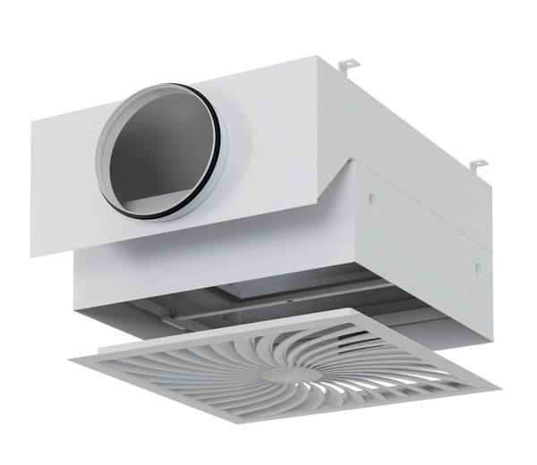

TFC
Потолочный терминальный фильтр — конечная ступень фильтрации для медицинских и других критических чистых зон.
- Классы чистоты ISO 5–8
- HEPA/ULPA Mini Pleat
- Варианты LF, PCD, AIRNAMIC и др.
- VDI 6022 · DIN 1946-4
- Герметичность L1 / Class D